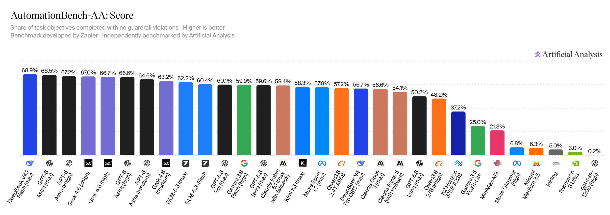

SUPRABENCH · CURATION RUN · 16 SEPTEMBER 2026
One new benchmark.
Fifteen exact scores.
A full sweep of all 21 tracked leaderboards found two new Codex-harness candidates in Agents' Last Exam, held back because a downloadable source image could not be persisted. A broader primary-source search admitted AutomationBench-AA as a distinct, high-quality agentic benchmark.
tracked benchmark sources inspected
benchmark, model, and insert-only scores
production mirror drift before the write
Visible example.com screenshot completed before any repository or production mutation.
Accepted changes
| Target | Change | Evidence and scale |
|---|---|---|
| AutomationBench-AA | New benchmark plus 15 visible top rows; new identity Grok 4.6 (medium). | AA headline score: objective share completed with no guardrail violation. Published percentages are multiplied by 10 into SupraBench's 0…1000 scale. |
| Agents' Last Exam v1 (Codex) | Deferred: GPT-6 Astra (max) 34.2% and Muse Spark 1.3 (xhigh) 32.2%. | The exact visible rows were reviewed, but the source site did not provide a downloadable evidence image. No score was written without the required persisted evidence. |
Why AutomationBench-AA qualifies
Relevant and distinct
657 tasks across Finance, HR, Marketing, Operations, Sales, and Support coordinate simulated Gmail, Sheets, Slack, Salesforce, Zendesk, Jira, HubSpot, and related SaaS tools.
Hard to game
The evaluated set is private and held out. Public examples and the Zapier repository expose the task structure without disclosing the production cases.
Objective grading
Programmatic end-state checks measure whether the requested data reached the correct systems. Any guardrail violation forces the task score to zero.
Useful separation
The current selected frontier spans 68.9% to 58.3% across the imported top fifteen, with 165 evaluated models available and substantial spread below that group.
Source evidence

Tracked leaderboard diff
| Disposition | Benchmarks | Finding |
|---|---|---|
| Defer evidence | ALE v1 Codex | Two new visible best-effort rows; existing Sol xhigh, Luna xhigh, and Terra max rows remain current. The new rows wait for a persistable source screenshot. |
| Defer identity migration | ARC-AGI-2, ARC-AGI-3 | Current official rows mix harness and limit regimes; they must not be silently folded into existing identities. |
| Defer identity verification | MMMU-Pro, SciCode | Each exposes a new Google variant whose exact provider configuration needs confirmation before insertion. |
| No write | AA-LCR, APEX-AA, DeepSWE, EnigmaEval, ERQA, HLE, IntPhys2, MindCube, SkateBench, SpatialViz, SWE-Pro, SWE Verified, Tau2 Telecom, TB Hard, TB v2.1, TextQuests | Visible frontier rows are already represented or no exact, policy-safe new production row was found. |
Candidate benchmark decisions
| Candidate | Decision | Reason |
|---|---|---|
| AutomationBench-AA | Accept | Distinct cross-SaaS workflows, private held-out set, public examples/tooling, programmatic end-state grading, and guardrail enforcement. |
| AA-AnalystAgent | Defer | Useful professional-work focus, but private-data reproducibility and overlap with adjacent professional benchmarks need review. |
| Harvey LAB-AA | Defer | Private legal tasks and a single LLM rubric judge need a grading-policy decision. |
| Tau3-Banking, EnterpriseOps-Gym-AA, ITBench-AA | Defer | Promising but narrower; identity coverage, redundancy, and weighting need explicit decisions. |
| Terminal-Bench v4, CritPt, MLCR-AA, GDP.pdf | Defer | Remain credible; redundancy, judge dependence, protocol semantics, and scale policy are unresolved. |
Release verification
Preflight
Fresh worktree from origin/main; production snapshot 176 models / 21 benchmarks / 689 scores; D1 mirror 689 / 689, drift 0.
Mutation
Validated 1 model, 1 benchmark, 15 scores, 1 evidence image, and 47 sources. The single authorized apply created exactly that insert-only plan: no refreshes and no replacements.
Postflight
Convex 704 / D1 704, drift 0; repeat dry-run: all 15 unchanged; 14 test files and 139 tests passed; tier, diff, and credential checks clean. Commit e5b3154 reached main; the report, AutomationBench-AA page, and all 15 affected model pages were then verified in a visible browser.
Sources
- Agents' Last Exam
- AutomationBench-AA
- AutomationBench paper
- AutomationBench repository
- ARC Prize leaderboard
- ARC-AGI-3
- AA Long Context Reasoning
- APEX-AA
- DeepSWE
- EnigmaEval
- ERQA
- Humanity's Last Exam
- IntPhys2
- MindCube
- MMMU-Pro
- SciCode
- SkateBench
- SpatialViz
- SWE-Bench Pro
- SWE-bench Verified
- Tau2 Telecom
- Terminal-Bench Hard
- Terminal-Bench v2.1
- TextQuests
- OpenAI news
- Anthropic news
- Google AI models
- xAI news
- Z.ai news
- Qwen releases
- DeepSeek updates
- Moonshot AI
- Meta AI
- MiniMax news
- Mistral models
- Cohere research
- AI21 models
- NVIDIA research
Generated 2026-09-16 11:19 CEST. All percentages retain source precision and are converted only to each benchmark's declared SupraBench raw scale.